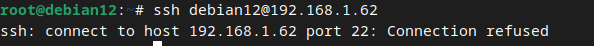
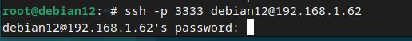
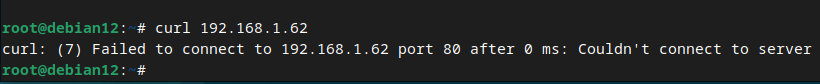
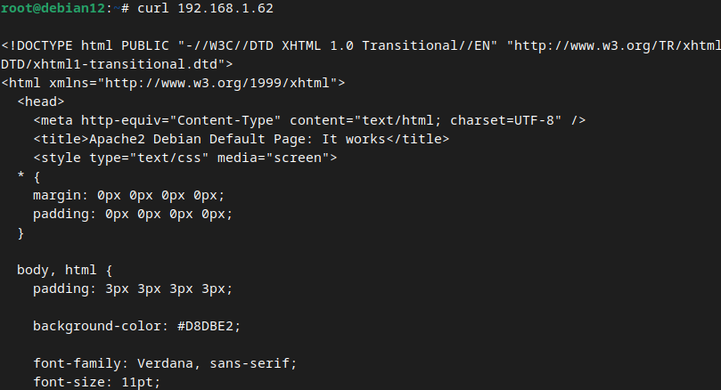
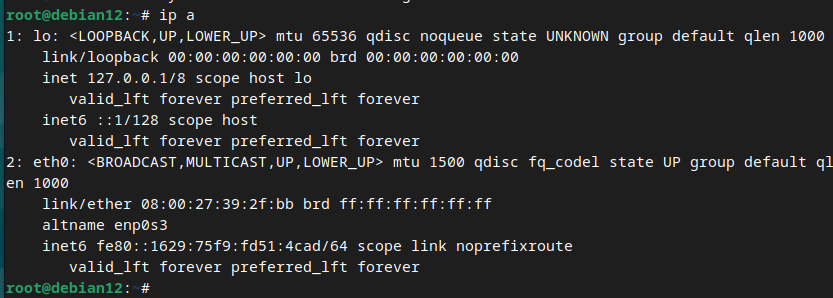
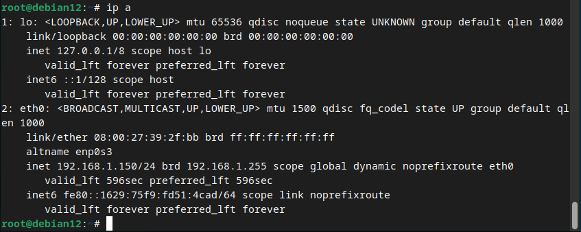
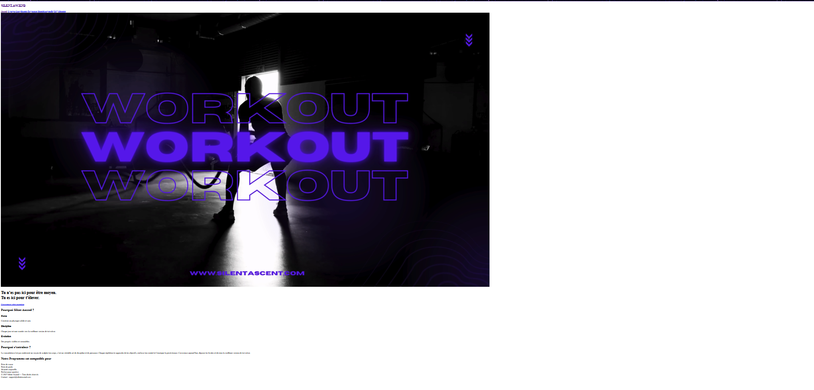
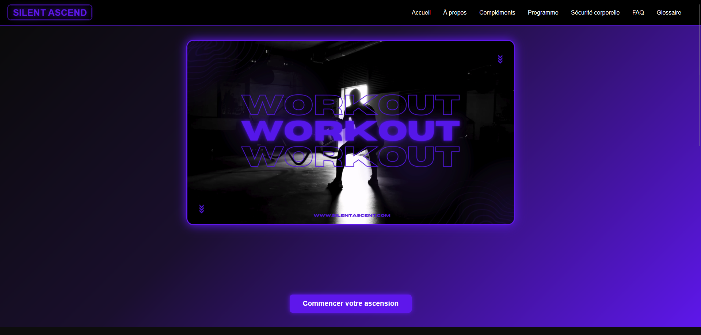
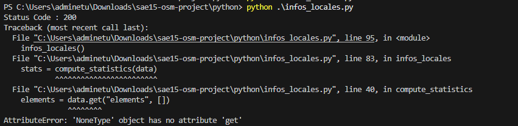

ABDULRAHMAN Hussein _
Ce portfolio documente ma trajectoire de développement en BUT Réseaux & Télécommunications, parcours Cybersécurité. À travers les Situations d'Apprentissage et d'Évaluation (SAÉ), je rends compte de ma progression, des compétences mobilisées et de ma démarche réflexive sur deux semestres.
Présentation & Projection professionnelle
À propos
Je m'appelle Hussein et je suis actuellement étudiant en deuxième année de BUT Réseaux et Télécommunications, parcours Cyber. Au cours de ma formation, j'ai développé des compétences en administration des réseaux, systèmes Linux, cybersécurité, développement web et programmation. J'ai choisi le parcours Cyber car je suis particulièrement intéressé par la sécurité des systèmes d'information, la protection des infrastructures réseau et l'identification des vulnérabilités. J'apprécie également les environnements Linux, les technologies réseau ainsi que l'automatisation à l'aide de scripts Python. Les différentes SAÉ réalisées durant ma formation m'ont permis de renforcer mes compétences techniques dans les domaines des réseaux, des systèmes et de la cybersécurité tout en développant mon autonomie, ma capacité d'analyse et ma méthode de résolution de problèmes. Mon objectif professionnel est de poursuivre mon évolution dans le domaine de la cybersécurité, de l'administration des systèmes et des réseaux, afin de contribuer à la sécurisation des infrastructures informatiques et à la protection des données.
Compétences principales
Évolutions observées au cours de la formation
[Quels progrès as-tu observés depuis ton entrée en formation ? Comment ton regard sur les réseaux et la cybersécurité a-t-il évolué ?]
Projection professionnelle
[Vers quels métiers, secteurs ou technologies souhaites-tu évoluer ? Quelles compétences te semblent centrales pour ton avenir professionnel ?]
Voir mon LinkedIn →Se sensibiliser à l'hygiène informatique et à la cybersécurité
📋 Description & Objectifs
Cette SAÉ avait pour objectif de nous initier aux fondamentaux de la sécurisation d'un système informatique dans un contexte professionnel simulé. Le travail portait sur la mise en place d'un accès distant sécurisé via le protocole SSH sur une machine sous Debian, en appliquant des bonnes pratiques de durcissement (hardening) du service.
Il s'agissait de comprendre le fonctionnement d'un serveur SSH, d'en modifier la configuration pour limiter les vecteurs d'attaque courants, et de documenter la démarche de diagnostic lorsqu'un problème survient — compétence essentielle dans tout environnement réseau réel.
🎯 Apprentissages Critiques mobilisés
AC11.02 Architecture des systèmes numériques et principes de l'InternetAC11.04 Rôles et principes fondamentaux des systèmes d'exploitationAC11.05 Identifier les dysfonctionnements du réseau local et savoir les signalerLa manipulation du service SSH sur Debian m'a conduit à comprendre comment les protocoles réseau (TCP/IP) gèrent les connexions sur des ports spécifiques, et comment un service écoute sur une interface réseau. J'ai ainsi consolidé ma compréhension de la couche transport et du modèle OSI en contexte réel.
Pour modifier la configuration d'OpenSSH et redémarrer le service, j'ai dû interagir
directement avec le système d'exploitation Debian via le terminal : édition de fichiers
de configuration système (/etc/ssh/sshd_config), utilisation de
systemctl pour gérer les services, et navigation dans l'arborescence Linux.
Face à l'échec de connexion SSH, j'ai appliqué une démarche de diagnostic structurée : identification du symptôme, hypothèses sur la cause, vérification par l'analyse des logs et des paramètres de configuration, puis correction ciblée. Cette approche méthodique est directement transférable à tout dysfonctionnement réseau.
🔧 Tâches réalisées
- Installation et configuration d'un serveur OpenSSH sur une machine Debian
- Modification du port d'écoute SSH (port 22 → port 3333) dans le fichier
/etc/ssh/sshd_configpour réduire l'exposition aux scans automatisés - Redémarrage du service via
systemctl restart sshet vérification de l'état avecsystemctl status ssh - Diagnostic de l'échec de connexion : identification que la commande SSH utilisait toujours le port 22 par défaut alors que le serveur écoutait sur le port 3333
- Correction de la commande de connexion en spécifiant explicitement le port avec l'option
-p 3333 - Vérification de la connexion réussie et documentation de la procédure
📁 Résultats & Traces

Cette capture illustre le message d'erreur obtenu lors d'une tentative de connexion
avec ssh utilisateur@adresse_ip sans préciser le port. Elle prouve
que j'ai su identifier le symptôme d'un problème de configuration réseau et
l'analyser méthodiquement pour en trouver la cause.

Cette capture montre la connexion fonctionnelle obtenue après correction, via la
commande ssh -p 3333 utilisateur@adresse_ip. Elle démontre la
maîtrise de la configuration d'un accès distant sécurisé et la capacité à
résoudre un problème de configuration de service réseau.
💬 Autoévaluation & Analyse réflexive
La principale difficulté a été de comprendre pourquoi la connexion échouait alors que le service SSH était bien actif. Sans expérience préalable des services réseau, je n'avais pas immédiatement conscience que la commande SSH utilise le port 22 par défaut, indépendamment de la configuration serveur. Cette confusion entre comportement client et configuration serveur est un piège classique pour les débutants.
J'ai adopté une démarche de diagnostic par élimination : vérification que le service
SSH était bien actif, lecture de la documentation de la commande ssh
pour identifier les options disponibles, puis test avec l'option -p.
Avec le recul, j'aurais pu gagner du temps en vérifiant dès le début l'état du port
d'écoute avec ss -tlnp ou netstat.
Cette SAÉ m'a apporté une compréhension concrète du protocole SSH, du rôle des ports réseau dans les connexions distantes, et des bonnes pratiques de sécurisation d'un serveur (changement de port, principe de moindre exposition). J'ai également développé une méthode de diagnostic structurée, applicable à tout problème de connectivité réseau.
S'initier aux réseaux informatiques
📋 Description & Objectifs
Cette SAÉ avait pour but de nous initier à l'administration de services réseau fondamentaux sous Linux (Debian). Deux services essentiels ont été mis en place et configurés : un serveur web Apache pour héberger un site accessible depuis le réseau local, et un serveur DHCP pour automatiser l'attribution des adresses IP aux postes clients.
L'objectif était de comprendre comment des services réseau écoutent et communiquent sur les interfaces réseau, et d'acquérir une méthode de diagnostic applicable à tout problème de connectivité.
🎯 Apprentissages Critiques mobilisés
AC11.02 Architecture des systèmes numériques et InternetAC11.03 Configurer les fonctions de base du réseau localAC11.04 Rôles et principes des systèmes d'exploitationAC11.05 Identifier les dysfonctionnements du réseau localAC11.06 Installer un poste clientLa configuration d'Apache et du DHCP m'a obligé à comprendre comment un service réseau écoute sur une interface donnée (adresse IP + port), et comment les trames circulent entre client et serveur. J'ai ainsi ancré concrètement les notions de couche transport et d'adressage IP.
La configuration du DHCP (fichier /etc/dhcp/dhcpd.conf, plage
d'adresses, passerelle) et d'Apache (modification de ports.conf) sont
des opérations directes de configuration du réseau local, mobilisant pleinement
cet AC.
L'ensemble des manipulations a été réalisé en ligne de commande sous Debian :
édition de fichiers de configuration système, gestion des services avec
systemctl, et vérification d'état — autant d'interactions directes
avec le système d'exploitation Linux.
Les deux problèmes rencontrés (Apache inaccessible depuis le réseau, DHCP ne distribuant plus d'IP) ont nécessité une démarche de diagnostic structurée : lecture des journaux système, vérification des interfaces réseau, analyse des fichiers de configuration.
La configuration d'une adresse IP statique sur le serveur Debian (fichier
/etc/network/interfaces) et la vérification de la connectivité
client/serveur illustrent la mise en service d'un poste dans un réseau local.
🔧 Tâches réalisées
— Problème 1 : Serveur Apache inaccessible depuis le réseau
- Installation du serveur web Apache2 sur Debian et vérification du fonctionnement local
- Test d'accès depuis un poste client avec
curl 192.168.10.62→ erreurFailed to connect to port 80 - Diagnostic : le service Apache écoutait uniquement sur
127.0.0.1(loopback), bloquant les connexions externes - Correction dans
/etc/apache2/ports.conf: remplacement deListen 127.0.0.1:80parListen 80 - Redémarrage du service avec
sudo systemctl restart apache2et vérification de l'accès réseau
— Problème 2 : Serveur DHCP ne distribuant plus d'adresses IP
- Installation du service isc-dhcp-server et configuration de la plage d'adresses
- Constat : le poste client ne recevait aucune adresse IP (vérifié avec
ip a) - Lecture des journaux système : message
No subnet declaration for eth0→ interface réseau sans IP statique - Configuration d'une IP statique sur le serveur dans
/etc/network/interfaces(adresse192.168.1.65/24) - Redémarrage des services :
sudo systemctl restart networkingpuissudo systemctl restart isc-dhcp-server - Vérification de l'attribution IP correcte sur le poste client
📁 Résultats & Traces
curl depuis le client)

Démontre la capacité à identifier un problème d'accessibilité réseau et à formuler une hypothèse sur sa cause (interface d'écoute restrictive).
ports.conf

Atteste la maîtrise de la configuration d'un service web et la résolution autonome d'un problème de disponibilité réseau.

Illustre l'utilisation de ip a comme outil de diagnostic réseau
et la lecture des logs système pour identifier l'origine du problème.

Prouve la capacité à configurer un serveur DHCP fonctionnel sur Debian et à relier la configuration réseau du serveur au bon fonctionnement du service.
💬 Autoévaluation & Analyse réflexive
La principale difficulté sur les deux problèmes était de comprendre que la
configuration d'un service et son accessibilité réseau sont deux choses distinctes.
Un service peut être actif (systemctl status vert) tout en étant
inaccessible si son interface d'écoute est mal configurée — ce n'est pas intuitif
au début.
J'ai systématisé la lecture des logs système (journalctl) avant de
modifier quoi que ce soit, ce qui m'a permis d'identifier rapidement la cause sur
le DHCP. Pour Apache, la vérification de l'interface d'écoute avec
ss -tlnp m'aurait permis d'aller encore plus vite.
Cette SAÉ m'a donné une vision concrète de la relation entre services réseau, interfaces réseau et adressage IP. J'ai compris que tout service doit explicitement "ouvrir" son écoute sur une interface réseau pour être joignable, et que la configuration statique du serveur est un prérequis au bon fonctionnement des services qu'il héberge.
Se présenter sur Internet
📋 Description & Objectifs
Cette SAÉ avait pour objectif de créer un site web de présentation personnelle, accessible en ligne, constitué de plusieurs pages HTML reliées par un menu de navigation commun. Le travail portait à la fois sur la structure du document (HTML), la mise en forme visuelle (CSS) et l'ergonomie de l'interface utilisateur.
Le site devait être cohérent, navigable et respecter des critères d'ergonomie de base. Un problème d'affichage du menu de navigation a été rencontré et résolu au cours du développement, illustrant l'importance du débogage CSS dans la réalisation d'interfaces web.
🎯 Apprentissages Critiques mobilisés
AC13.01 Utiliser un système informatique et ses outilsAC13.04 Comprendre l'architecture et les technologies d'un site WebLe développement du site a nécessité l'utilisation d'un éditeur de code, la gestion de fichiers HTML/CSS organisés en arborescence de projet, et l'ouverture du site dans un navigateur pour tester les modifications en temps réel — usage direct des outils informatiques du développeur web.
La résolution du bug de menu (propriété z-index mal configurée) m'a
conduit à comprendre le modèle de rendu CSS : flux normal, positionnement, contexte
d'empilement (stacking context) et ordre d'affichage des couches. Ces notions
sont au cœur de l'architecture d'un site web côté client.
🔧 Tâches réalisées
- Conception et développement d'un site web multi-pages en HTML/CSS avec menu de navigation commun à toutes les pages
- Structuration du projet en fichiers séparés (une page par section, une feuille de style CSS commune)
- Diagnostic d'un bug d'affichage : le menu de navigation devenait invisible ou passait derrière d'autres éléments après certaines modifications CSS
- Identification de la cause : une valeur incorrecte de
z-indexsur le conteneur du menu créait un contexte d'empilement défavorable - Correction de la propriété CSS et vérification du rendu sur plusieurs pages du site
- Tests de navigation et validation de l'ergonomie de l'interface
📁 Résultats & Traces

Illustre le problème de superposition CSS rencontré. Démontre la capacité à
identifier visuellement un dysfonctionnement d'interface et à le lier à une
propriété CSS spécifique (z-index).

Prouve la résolution du problème et la maîtrise du modèle d'empilement CSS. Le menu est fonctionnel et accessible sur l'ensemble des pages du site.
💬 Autoévaluation & Analyse réflexive
La difficulté principale était de comprendre pourquoi un élément pourtant présent dans
le HTML devenait invisible à l'écran. Le z-index est une propriété
dont l'effet dépend du contexte d'empilement parent, ce qui n'est pas évident
à déboguer sans comprendre le modèle de rendu CSS en profondeur.
J'ai utilisé les outils de développement du navigateur (DevTools) pour inspecter
les propriétés CSS appliquées au menu et identifier la valeur de z-index
problématique. Cette approche m'a appris à utiliser les DevTools comme outil de
débogage standard, et non plus seulement pour visualiser le rendu.
Cette SAÉ m'a donné une maîtrise concrète du cycle de développement web :
structure HTML, mise en forme CSS, débogage avec les DevTools, et ergonomie.
La résolution du bug de z-index m'a surtout appris à ne pas modifier
du CSS "à l'aveugle" mais à comprendre pourquoi une propriété produit un certain effet.
Traiter des données
📋 Description & Objectifs
Cette SAÉ avait pour objectif de développer un script Python capable de récupérer des données géographiques depuis l'API Overpass (OpenStreetMap), de les traiter statistiquement, puis de générer automatiquement une fiche d'informations locales exportée en Markdown puis en HTML.
Le cas d'usage concret portait sur l'extraction des parcs présents dans la ville de Sfax. Le travail couvrait ainsi trois compétences clés du développeur RT : requêter une API web, traiter des données JSON en Python, et générer automatiquement un document de sortie formaté.
🎯 Apprentissages Critiques mobilisés
AC13.01 Utiliser un système informatique et ses outilsAC13.02 Lire, exécuter, corriger un programmeAC13.05 Mécanismes de gestion de donnéesLe développement et l'exécution du script en Python depuis un terminal, la gestion
de l'arborescence de fichiers de sortie (../html/) et l'utilisation de
bibliothèques tierces constituent une utilisation avancée des outils informatiques
du développeur.
L'erreur AttributeError: 'NoneType' object has no attribute 'get'
a nécessité une lecture précise du traceback Python, une analyse du flux d'exécution
du programme (appel de get_dataset() → compute_statistics())
et une correction ciblée : s'assurer que la fonction retournait bien
response.json().
La récupération de données JSON depuis l'API Overpass, leur parsing en dictionnaire Python, le calcul de statistiques sur les éléments extraits et la génération automatique d'un fichier Markdown/HTML constituent une chaîne complète de traitement de données — au cœur de cet apprentissage critique.
🔧 Tâches réalisées
- Développement d'un script Python interrogeant l'API Overpass pour récupérer les parcs de Sfax au format JSON
- Implémentation d'une fonction
get_dataset()effectuant la requête HTTP et renvoyant les données parsées - Implémentation d'une fonction
compute_statistics()calculant des indicateurs sur les éléments récupérés - Diagnostic d'une erreur
AttributeError: 'NoneType': la variabledataétaitNonecar la fonction ne renvoyait pas explicitement le résultat JSON - Démarche de débogage par étapes : ajout de
print("Status Code :", response.status_code), vérification du retour deget_dataset(), correction avecreturn response.json() - Génération automatique d'une fiche au format Markdown puis conversion en HTML (
infos_locales.html)
📁 Résultats & Traces
AttributeError: 'NoneType' object has no attribute 'get'

Trace du message d'erreur Python dans le terminal. Prouve la capacité à lire
un traceback et à localiser précisément l'instruction fautive dans le code
(data.get("elements", []) dans compute_statistics()).
Le terminal affiche Status Code : 200 et
Fiche infos_locales générée avec succès. Atteste la maîtrise complète
de la chaîne : requête API → parsing JSON → calcul statistique → export HTML.
💬 Autoévaluation & Analyse réflexive
La difficulté principale était contre-intuitive : le code HTTP retournait 200 (succès),
ce qui m'a fait croire d'abord que le problème venait de l'API Overpass. En réalité,
l'erreur se trouvait dans mon propre code — la fonction get_dataset()
ne renvoyait rien (return manquant), donc data valait
toujours None.
J'ai adopté une démarche de débogage par isolation : vérifier d'abord la réponse
HTTP, puis le contenu retourné par chaque fonction, avant de modifier quoi que ce
soit. Cette méthode m'a permis de localiser l'origine réelle du bug. Avec le recul,
j'ajouterais systématiquement des contrôles de type (if data is None)
avant tout traitement de données externes.
Cette SAÉ m'a donné une expérience concrète de la consommation d'une API web en Python et du cycle complet de traitement de données. Sur le plan du débogage, j'ai compris qu'un code HTTP 200 ne garantit pas que les données sont correctement transmises à travers le programme — il faut valider chaque maillon de la chaîne de traitement, pas seulement la requête réseau.
Construire un réseau informatique pour une PME
📋 Description & Objectifs
[Contexte et objectifs]
🎯 Apprentissages Critiques mobilisés
AC11.02 Architecture systèmes numériquesAC11.03 Configurer les fonctions de baseAC11.04 Rôles des systèmes d'exploitationAC11.05 Identifier les dysfonctionnementsAC11.06 Installer un poste clientAC12.01 Mesurer et analyser les signauxAC12.02 Systèmes de transmission élémentairesAC12.03 Déployer des supports de transmission[Explique comment chaque AC a été mis en œuvre.]
🔧 Tâches réalisées
- [Tâche 1]
- [Tâche 2]
📁 Résultats & Traces
[Description]
💬 Autoévaluation & Analyse réflexive
[À compléter]
[À compléter]
[À compléter]
Mesurer et caractériser un signal ou un système de transmission
📋 Description & Objectifs
[Contexte et objectifs]
🎯 Apprentissages Critiques mobilisés
AC12.01 Mesurer et analyser les signauxAC12.02 Systèmes de transmission élémentairesAC12.03 Déployer des supports de transmissionAC12.05 Communiquer avec un tiers[Explique comment chaque AC a été mis en œuvre.]
🔧 Tâches réalisées
- [Tâche 1]
- [Tâche 2]
📁 Résultats & Traces
[Description]
💬 Autoévaluation & Analyse réflexive
[À compléter]
[À compléter]
[À compléter]
Mettre en place une solution informatique pour une PME
📋 Description & Objectifs
[Contexte et objectifs]
🎯 Apprentissages Critiques mobilisés
AC13.01 Utiliser un système informatiqueAC13.02 Lire, exécuter, corriger un programmeAC13.03 Traduire un algorithmeAC13.04 Architecture WebAC13.05 Gestion de donnéesAC13.06 Environnement collaboratif[Explique comment chaque AC a été mis en œuvre.]
🔧 Tâches réalisées
- [Tâche 1]
- [Tâche 2]
📁 Résultats & Traces
[Description]
💬 Autoévaluation & Analyse réflexive
[À compléter]
[À compléter]
[À compléter]
Projet intégratif
📋 Description & Objectifs
[Contexte et objectifs du projet intégratif]
🎯 Apprentissages Critiques mobilisés
AC11.01–06 Toutes les AC RT1 niveau 1AC12.01–05 Toutes les AC RT2 niveau 1AC13.01–06 Toutes les AC RT3 niveau 1[Pour chaque compétence, explique concrètement ce que tu as apporté au projet.]
🔧 Tâches réalisées
- [Tâche 1]
- [Tâche 2]
📁 Résultats & Traces
[Description]
💬 Autoévaluation & Analyse réflexive
[À compléter]
[À compléter]
[À compléter]
Bilan par compétence – Semestre 1
Administrer les réseaux et l'Internet
Niveau 1 – Assister l'administrateur[Liste les AC que tu considères bien maîtrisés, avec justification courte.]
[Quels AC restent à consolider ? Pourquoi ?]
[Quelle évolution observes-tu sur cette compétence depuis le début du semestre ?]
[Sur quoi vas-tu t'appuyer au S2 pour progresser sur RT1 ?]
Connecter les entreprises et les usagers
Niveau 1 – Découvrir les transmissions et la ToIP[À compléter]
[À compléter]
[À compléter]
[À compléter]
Créer des outils et applications pour les R&T
Niveau 1 – S'intégrer dans un service informatique[À compléter]
[À compléter]
[À compléter]
[À compléter]
Bilan par compétence – Semestre 2
Administrer les réseaux et l'Internet
Bilan de fin d'année S1→S2[À compléter]
[À compléter]
[Comment as-tu progressé entre S1 et S2 sur cette compétence ?]
[Dans quels autres contextes pourrais-tu réinvestir ces acquis en S3 ?]
Connecter les entreprises et les usagers
Bilan de fin d'année S1→S2[À compléter]
[À compléter]
[À compléter]
[À compléter]
Créer des outils et applications pour les R&T
Bilan de fin d'année S1→S2[À compléter]
[À compléter]
[À compléter]
[À compléter]